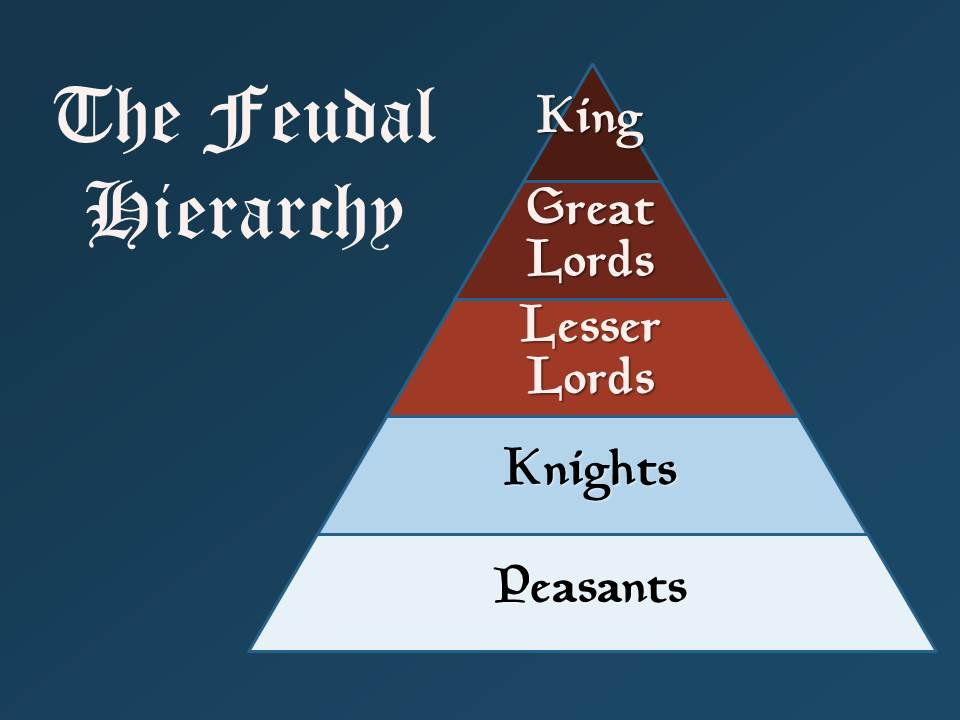

Mya Lam
The Middle Ages extended from 500 to 1400-1500 CE after the fall of the Western Roman Empire. The Middle Ages was also known as the age of ignorance, superstition, social oppression and the rise of the nobility/monarchies (feudalism). Feudalism was a social system during the Middle Ages in Europe, in which the monarch would entrust his land to nobles in exchange for political and military support. Nobles would give out the land to peasants who would pay through labour and taxation. It was a way of structuring society around relationships derived from the holding of land in exchange for labour. This system allowed for wealth to flow from low-class peasants, upward toward the nobility, and the monarchy/king who owned the land. Much of the population lived in poverty and paid an enormous amount of taxes. Additionally, the Catholic church held an extreme amount of political and cultural power at the time. The church influenced worldview due to the fact that most of the population was illiterate and could not question the church's teachings. Since the Catholic church was the most important patron of the arts many of the paintings/sculptures/mosaics depicted images of god and other cultural symbols. The Middle Ages moved towards faith as a result of the political and cultural power held by the Catholic church at the time, making it the most powerful institution.

(A hierarchy in which peasants (at the bottom) would work for access to land given by the King to his nobles.)